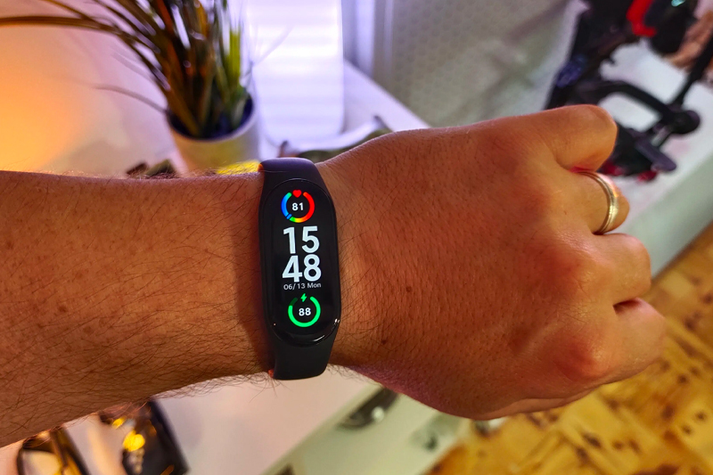

PulseTech
PulseTech
Trendar i

PulseTech

Sammanfattning: För alla över 50 år handlar det om HÄLSA. Och den fantastiska PulseTech-smartklockan har utvecklats för att hjälpa till att upptäcka allvarliga hälsorisker innan det är för sent.Kan du föreställa dig hur det känns att tillbringa en eftermiddag på akutmottagningen med möjliga hjärtproblem? Det gjorde jag nyligen, och det var en ögonöppnare.
Jag är 56 år. Inte ung, men knappast "gammal" (jag lyssnar fortfarande på hårdrock!) Jag klippte gräsmattan en lördagseftermiddag och efter kanske en halvtimme började jag känna mig yr. Mitt hjärta började slå snabbare, och jag kände mig rejält andfådd.
Jag var rädd ... Jag gick över till uteplatsen, satte mig ner och försökte hämta andan. Där stannade jag tills min fru kom ut och frågade vad som var fel. Hon tog mig omedelbart till sjukhuset.
På akutmottagningen ställde läkaren mig frågor i stil med:Jag kände mig lite fånig eftersom allt jag kunde säga till dem var "jag vet inte". Jag har helt enkelt aldrig brytt mig om sådana saker. Som sagt, jag är 56, och även om jag har några extra kilon (tack Budweiser) anser jag själv att jag är i hyfsad form.
Hursomhelst, efter några tester fick jag "klartecken" (det var förmodligen uttorkning och solen), men läkaren sa att mina värden inte var optimala och att jag hade en viss risk för hjärtinfarkt. Han sa att jag måste vara mer uppmärksam på vad min kropp talar om för mig.
"Hjärtinfarkter har ofta varningssignaler och det är viktigt att upptäcka dem tidigt"Det var hans avskedsord. Och tro mig, jag lyssnade.

Jag kunde inte sluta tänka på de frågor som läkaren ställde. Jag borde hålla koll på min hälsa, och i synnerhet mitt hjärta.
Jag började undersöka blodtrycks- och pulsmätare för hemmabruk och föreställde mig en otymplig maskin i sovrummet. Döm om min förvåning när jag gång på gång läste om en snygg liten smartklocka vid namn PulseTech.
Det visade sig att den här smartklockan är en sensation på sociala medier, och av goda skäl: Den gör allt det viktiga som andra smartklockor gör (som att ta emot samtal, synka med telefoner, räkna steg osv.) men den innehåller dessutom utmärkt teknik för hjärt- och hälsokontroll.
Men det bästa är priset. Det faktum att du kan få den här smartklockan för mindre än 1.189,00 kr är, uppriktigt talat, förbluffande.
"Med den kunskap vi har om branschen för smartklockor efter att ha arbetat i flera år för [varumärke borttaget] var vi övertygade om att vi kunde utveckla något med samma värde till ett bättre pris. Vi anser att smartklockor kan vara både högkvalitativa och prisvärda, samtidigt som de ger människor den hälsoinformation de behöver. PulseTech bevisar att det är möjligt."
- Mike Garner, PulseTech ingenjör
Låt mig besvara några mycket viktiga frågor om PulseTech-smartklockan, med början på den viktigaste: hälsofunktionerna:

Jag lovar dig att nu när jag har PulseTech i mitt liv (och på min handled) kommer jag verkligen att vara uppmärksam på mitt hjärta varje dag. Jag vill leva ett långt och lyckligt liv.
De lyckades verkligen med PulseTech – jämfört med superdyra smartklockor från stora varumärken har jag svårt att hitta något som den inte gör! Här är en lista över funktionerna du får med en PulseTech-smartklocka.
Det finns också en 30-dagars pengarna-tillbaka-garanti: Om du inte är nöjd med prestandan hos PulseTech kan du skicka tillbaka den och få en fullständig återbetalning från företaget, inga frågor.

Se vad andra har att säga om kvaliteten på PulseTech-klockan.
"Jag använde en Apple-klocka ett tag. Jag gillade verkligen den, men när min vän visade mig sin PulseTech-klocka som gör precis samma saker till en bråkdel av priset... kände jag mig faktiskt ganska dum. Naturligtvis köpte jag PulseTech senare, och all hype är sann. Den fungerar precis som min smartklocka som kostade nästan 3.567,00 kr."
- Hunter R. - San Francisco, CA
"Jag fick klockan väldigt snabbt, på bara fyra dagar. Jag blev genast förvånad över hur högkvalitativ den kändes, som om man verkligen kunde "slå på den" lite, om du förstår vad jag menar. Jag använder den för långa löprundor och vattentätheten verkar fungera bra. Jag är definitivt nöjd med köpet."
- Rebecca H. - Philadelphia, PA
"Jag är förbluffad över att jag kan få mitt blodtryck och min hjärtfrekvens på ett ögonblick. Tekniken är fantastisk. Jag önskar att min farfar hade haft en av dessa för trettio år sedan. Han kanske inte hade gått bort vid 65 års ålder."
- Chase P. - New York City, New York
Jag nämnde tidigare att du kan få PulseTech för under 1.189,00 kr. Och du gissade rätt – priset på "under 1.189,00 kr" är vanligtvis 1.058,21 kr. Det är ett utmärkt pris.
Men just nu genomför företaget ett marknadsföringstest enbart på nätet och säljer PulseTech-klockor till det otroliga priset på 582,61 kr
Det stämmer – du kan få en PulseTech-smartklocka för 582,61 kr. Det är 50 % RABATT!
Detta är ett erbjudande som man bara får en gång i livet, och eftersom rabatten är så kraftig så företaget att de endast kan hålla den öppen tills det nuvarande lagret tar slut. Så se till att du agerar snabbt för att få ta del av erbjudandet (klockan passar också utmärkt som present!)
Företaget har dessutom så stort förtroende för sina klockor att de till och med erbjuder en 30-dagars pengarna-tillbaka-garanti. Du kan helt enkelt inte slå detta erbjudande.
Slutsatsen är att du får ett lägre och mer rättvist pris.
Klicka här för att få din PulseTech-klocka till 50 % RABATT direkt från företagets webbplats.